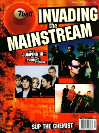
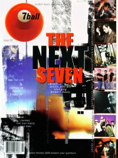
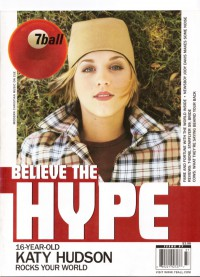

CMnexus
:
Contemporary Christian culture, music, and media.
Magazines
Profiles
Dove Awards
cmnexus.org
CM
nexus
→
Profiles
→
M
→
Kyle Minor
Kyle Minor
Writing credits listing

Mar 2000 in
7ball
#29
"Channelsurfing"
Crossover artists -
Sixpence None the Richer
,
Switchfoot
,
P.O.D.
,
Steve Camp

May 2000 in
7ball
#30
"Best of the New: 7 new artists that are changing the face of Christian music"
Philmore
,
Earthsuit
,
Ill Harmonics
,
Spark
,
Dicky Ochoa
,
MG! The Visionary
,
Chris Taylor
Bankshots:
Beanbag
Bankshots:
Room Full of Walters
Noggin Toboggan
-
Your Days Are Numbered
Jul 2000 in
7ball
#31
"Home Again"
The Choir
"Fishers of Men"
Squad 5-0
"Desert Oasis"
Kendall Payne
"Christians In Comics"
Christians in comic art: Mike Miller, Hal Jones, Ralph Miley, Jack Chick, Chuck Dixon, Darryl Banks
These 5 Down
-
These 5 Down
Nov 2000 in
7ball
#33
Aaron Sprinkle
-
The Kindest Days
Mar 2001 in
HM
#88
Sick of Change

Jul 2001 in
7ball
#37
"Making Friends"
Katy Hudson
CMnexus
(noun)
The magazine index
of modern music
and Christianity
© 2011 CMnexus. Last updated May 2025.
Contact:
Rants and other correspondence to:
editor -AT- cmnexus
-DØT- org
About